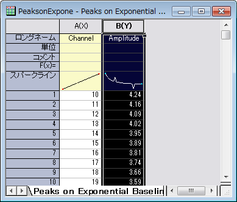
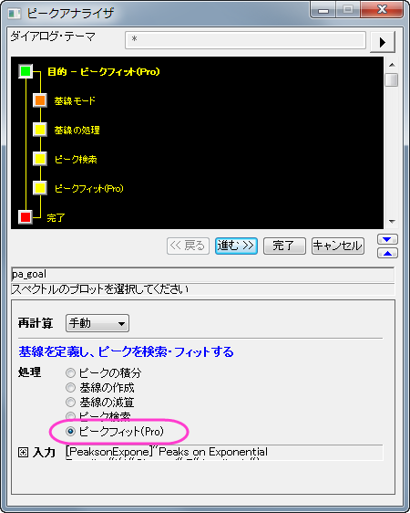
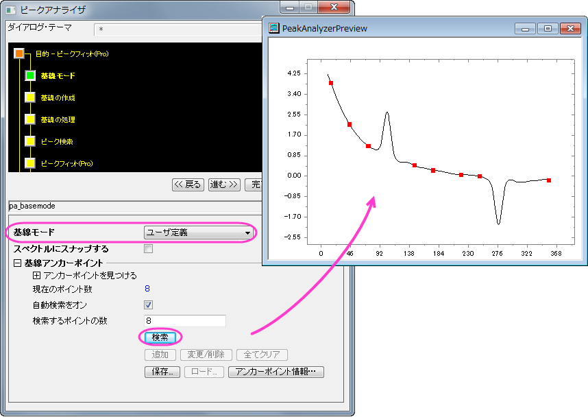
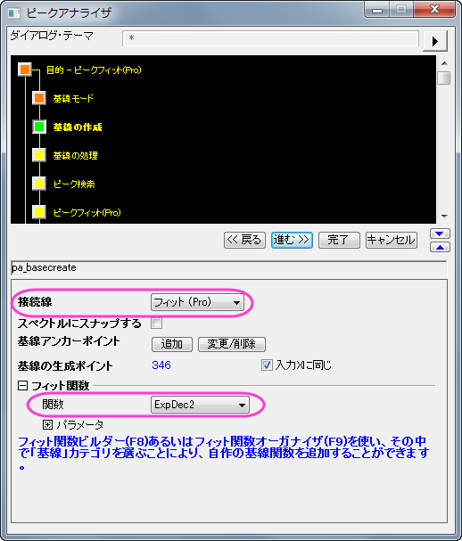
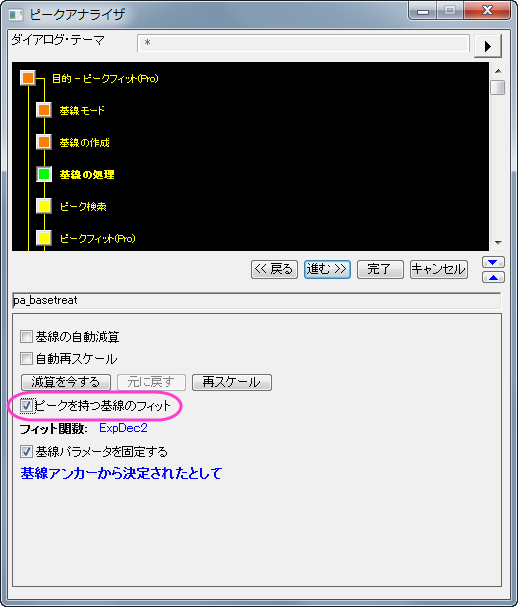
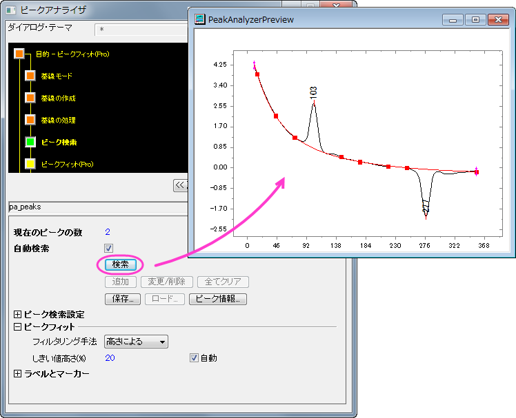
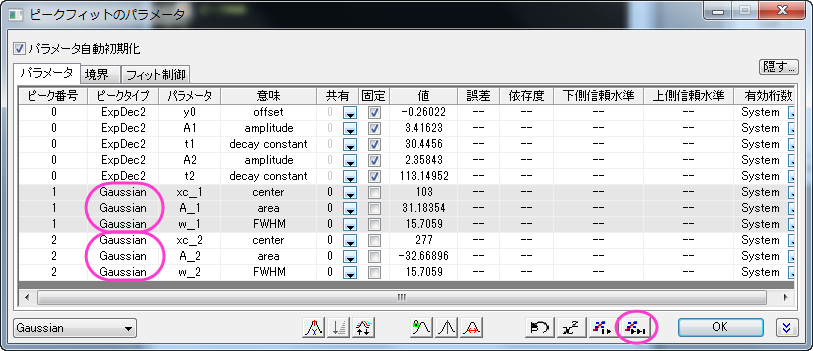

基線と一緒にピークフィットを行う
PeakFitting-Baseline
サマリー
OriginProでは、ピークアナライザを使って、いくつかの基線減算オプションで複数ピークフィットを実行することができます。
スペクトルデータの基線を作成するさまざまな方法があります。2,3のアンカーポイントを選択し、関数でそれらをフィットすることができます。基線のフィットはピークフィット中に行われます。
必要なOriginのバージョン:Pro 8.0 SR6
学習する項目
- ピークのフィットを実行する方法
- 基線をフィットする方法
ステップ
- 新しいワークブックを開き、Samples\Spectroscopy\Peaks on Exponential Baseline.datファイルをインポートします。
- ワークシートの2列目を選択します。

- メニューから解析：ピークと基線：ピークアナライザを選び、ピークアナライザを開きます。
- 最初のページの「ゴール」グループの「ピークのフィット」ラジオボタンを選択します。「進む」をクリックし、「基線モード」ページに移動します。

- 基線モードページで、基線モードドロップダウンリストからユーザ定義を選びます。「基線アンカーポイント」グループで、「検索」ボタンをクリックします。8つのアンカーポイントが見つかります。次に、進むをクリックし、基線の作成ページに移動します。

- 基線の作成ページの接続線ドロップダウンリストで、関数でフィットを選びます。「フィット関数」グループで、「関数」ドロップダウンリストから「ExpDec2」を選びます。「進む」をクリックし、「基線の処理」ページに移動します。

- 基線の処理ページで、ピークを持つ基線のフィットチェックボックスを選択します。「進む」をクリックし、「ピーク検索」ページに移動します。

- ピークの検索ページで検索ボタンをクリックすると2つのピークが見つかります。進むをクリックしてピークのフィットページに移動します。

- ピークのフィットページでフィット制御ボタンをクリックして、ピークフィットのパラメータダイアログを開きます。
- 「ピークフィットのパラメータ」ダイアログで、両方のピークタイプがGaussianになっていることを確認します。「収束までフィット」ボタンをクリックします。フィットが済んだら、OKをクリックして、ダイアログを閉じます。

- ピークのフィットページに戻り、完了ボタンをクリックして分析を完了します。元のワークブック内に結果シートが作成され、グラフレポートも作成されます。